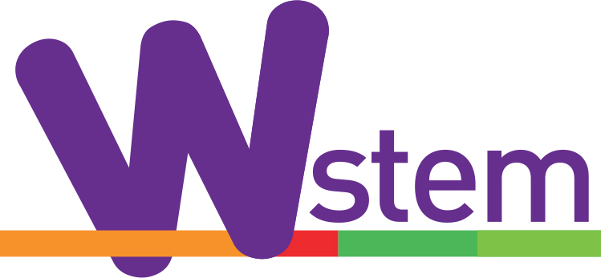

<ion-header class="ion-no-border">
  
  <ion-toolbar color="primary" class="toolb">
    <div id="header">
   
      
      
    </div>
    
    
    <ion-buttons *ngIf="datos.nivel_academico=='secundaria'" slot="start">
      <ion-back-button
        color="light"
        defaultHref="menu-opciones-se/menu-principal/home-secundaria"
      ></ion-back-button>
    </ion-buttons>
    <ion-buttons *ngIf="datos.nivel_academico=='superior'" slot="start">
      <ion-back-button
        color="light"
        defaultHref="/menu-opciones/tabs/home-superior"
      ></ion-back-button>
    </ion-buttons>
  </ion-toolbar>
</ion-header>
<ion-content>

  <div class="fndtoolbar"> 
    <div class="horizontal">
      <p class="font-size-16" style="font-weight: 700">Me gusta, sigue y comparte</p>
    </div>
    <div class="horizontal">
      <div class="social-icons" (click)="socialMedia('FACEBOOK')">
        <ion-icon name="logo-facebook"></ion-icon>
      </div>
      <div class="social-icons" (click)="socialMedia('INSTAGRAM')">
        <ion-icon name="logo-instagram"></ion-icon>
      </div>
      
      
    </div>
    <br>
    <br>
    <div class="horizontal">
      <div class="social-icons" (click)="socialMedia('TWITTER')">
        <ion-icon name="logo-twitter"></ion-icon>
      </div>
      <div class="social-icons" (click)="socialMedia('PAGE')">
        <ion-icon name="globe"></ion-icon>
      </div>
    </div>
  </div> 
  
  <!-- <ion-grid>
    <ion-row>
      <ion-col>
        <ion-icon style="zoom:3.0;color: rgb(105, 26, 145);" name="logo-facebook"></ion-icon>
       
      </ion-col>
      
      <ion-col>
        <ion-icon style="zoom:3.0;color: rgb(105, 26, 145);" name="logo-instagram"></ion-icon>
        
      </ion-col>
    </ion-row>
    <ion-row>
      <ion-col>
        
        <label>FICA STEM</label>
      </ion-col>
      
      <ion-col>
     
        <label>@fica_stem</label>
      </ion-col>
    </ion-row>
    <ion-row>
      <ion-col>
        <ion-icon style="zoom:3.0;color: rgb(105, 26, 145);" name="logo-twitter"></ion-icon>
        
      </ion-col>
      <ion-col>
        <ion-icon style="zoom:3.0;color: rgb(105, 26, 145);" name="globe"></ion-icon>
        
      </ion-col>
    </ion-row>
    <ion-row>
      <ion-col>
        
        <label>@StemFica</label>
      </ion-col>
      <ion-col>
       
        <label>https://wstemproject.eu</label>
      </ion-col>
    </ion-row>
  </ion-grid> -->
</ion-content>
<ion-footer class="ion-no-border">
  
 <div class="ficastemlogo">
  
 </div>
 <div class="wstemlogo">
  
</div>
</ion-footer>
